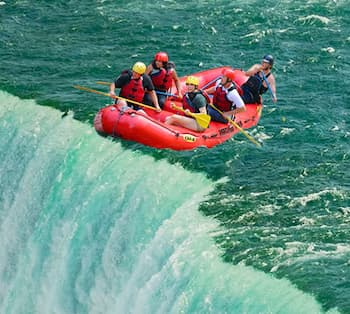
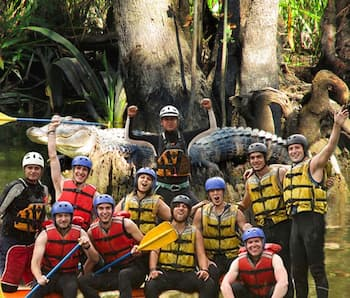
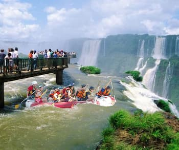

Amazing White Water Rafting Trips Planned to Perfection
Here at Handy Rafting we pride ourselves in the amazing adventures we have planned for you. You don't have to worry about any of the details. We take care of everything. All you have to do is show up and enjoy the ride! If any of these trips interest you, please Contact Us.
Niagara Falls
Have you ever imagined going over Niagara Falls in an inflatable raft? You no longer have to imagine what it would be like. You can live it! Is it safe? Will you survive? These are all excellent questions that we can answer together. You can also go over the falls in a wooden barrel. Please note that every participant must sign a waiver before the trip can begin.
Gator Garden Bayou
Travel to the Amazing Gator Garden Bayou to be immersed in a giant alligator infested marshland. What could be more amazing than that? You will see, and take pictures with, gigantic alligators. Just make sure to stay in the raft at all times. Disclaimer: Handy Rafting is not responsible for any possessions or body parts you stick in the water.
Iguazu Falls
The amazing Iguazu Waterfalls are considered by some to be the 8th wonder of the world. Located on the borders of Brazil, Argentina, and Paraguay, these waterfalls will amaze and astound you. Make sure you bring lots of mosquito repellant. Note: Please don't feed the local Coatimundi wildlife. They're starting to get fat!